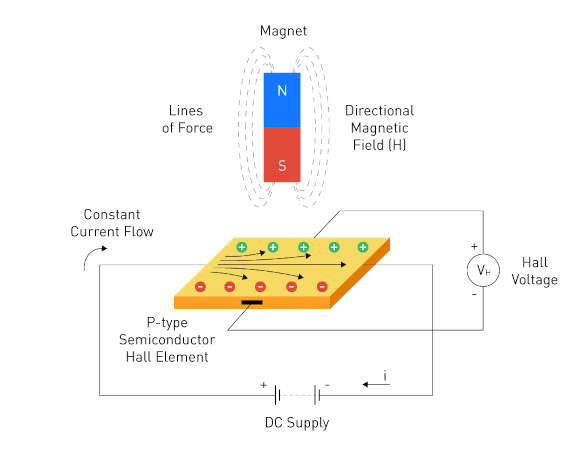

INPUT DEVICES
This week's assignment were:
Hall Effect sensors operate based on the Hall Effect phenomenon. When a current-carrying conductor or semiconductor is exposed to a perpendicular magnetic field, it induces a voltage across the conductor. This voltage, known as the Hall voltage ((V_H)), is directly proportional to the magnetic field strength.
Linear Hall Effect sensors provide an analog output voltage that varies linearly with the strength of the magnetic field. these sensors work by measuring the changing voltage when the device is placed in a magnetic field. so by bringing a magnet close to the sensor, the voltage will change.
So for the group assignment, I will use a oscilloscope to measure the voltage change when a magnet is brought close to the sensor. and also by checking the sensor data sheet we can observe this. here
An oscilloscope is a device that is used to measure and display voltage signals as a function of time.
Analog is represented by the yellow trace on the oscilloscope. This does not actually measure the voltage but instead the average amplitude which is the strength of the magnet and its magnetic field in a certain distance to the sensor. By setting the oscilloscope to coupling ac, the oscilloscope will measure the average amplitude of the signal. To further test this, we changed the sensitivity of the sensor (this is done by turning a little knob on the sensor with a screwdriver (this acts as a potentiometer)).
We observed analog signals on the oscilloscope, which are represented by a yellow line on the oscilloscope. By observing the interaction between the sensor and the magnet, we tested how the difference values of the analog signals can occur. At the end of this experiment, we saw that the horizontal movement of the magnet on the sensor (the distance does not change) and the vertical movement (the distance changes) causes the analog signal value to change.
By setting the sensor's sensitivity to the lowest, we observed smaller changes in the signal. This is because the sensor is less sensitive to the magnetic field.
We observed how the analog signal is generated on the oscilloscope at minimum sensitivity. The analog signal line changes with small movements because the sensor is operating at minimum sensitivity.
By setting the sensor's sensitivity to the highest, we observed larger changes in the signal. This means there is a bigger amplitude between the analog levels.
Digital is represented by the blue trace on the oscilloscope. This measures the digital signals that are sent from the sensor to the microcontroller. The digital signals are sent when the sensor detects a magnetic field. This is represented kind of like a pwm signal.
We observed the pmw signal on oscilloscopy. The jumping line on the oscilloscope represents the digital output. We observed this output on the oscilloscope as a result of the magnet approaching and moving away from the sensor. As the magnet gets closer to the sensor, the range grows and eventually reaches its maximum value.